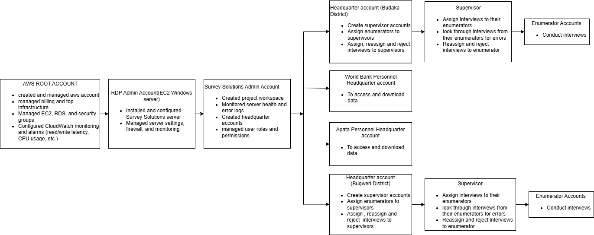
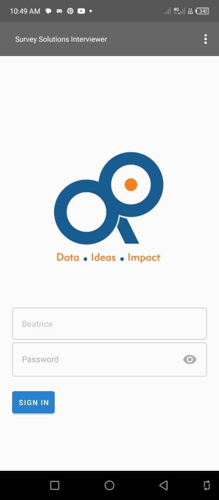
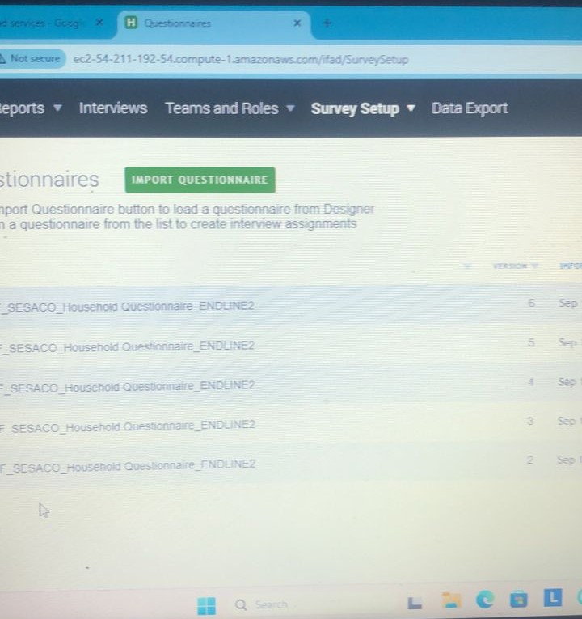

For IFAD Agriculture study in Budaka and Bugweri districts
During this agriculture study, the client delayed in providing a server and deadlines were catching up . So i went ahead to set up an Amazon Web Services(AWS) server and hosted Surevy Solutions on it to support data collection and team-based survey management.For this project, i was the AWS root user,RDP Administrator, Survey Solutions Administrator and the Headquarter account for Bugweri.

I created two main components in AWS: an EC2 instance running Windows Server 2019 to host the Survey Solutions application, and an RDS PostgreSQL instance to store the data. I configured security groups to control network access between the server and the database. The PostgreSQL database was set to private access only, so that it was not publicly accessible from the internet.
After launching the EC2 instance, I connected to it using Remote Desktop (RDP). I installed Survey Solutions by downloading and running the installer. During installation, I configured the connection to the PostgreSQL database and set up the administrator account. I also adjusted the site bindings so the application would listen on HTTP instead of the default localhost configuration.
For backup and storage( survey had photos ), I created an Amazon S3 bucket and attached it to the EC2 instance using an IAM role. This allowed the server to access S3 without storing access keys directly on the machine. For monitoring, I enabled CloudWatch metrics and monitored database read and write latency. I also set up billing alarms to notify the finance team when costs exceeded particular thresholds.
The system was successfully deployed, as the administrator i had a web interface where i monitored server health and other metrics,monitored data collection devices. I created headquarter accounts for the associates leading data collection in the two districts and also the project team members from Apata and IFAD , World Bank. From the headquarter accounts, 2 supervisor accounts were created to allow supervisors easy login via the supervisor app. Enumerator accounts were also created and each enumerator was assigned a tablet for the project. I personalized the interviewer app to have our logo as seen below;

The server was closed after the study. Below is a screenshot showing the survey questionnaire being imported on the AWS-hosted Survey Solutions server
